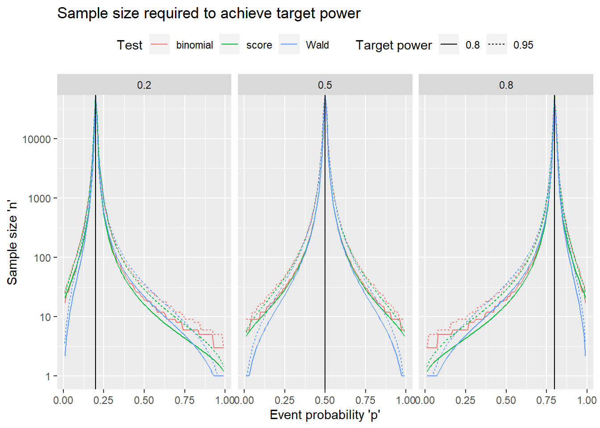
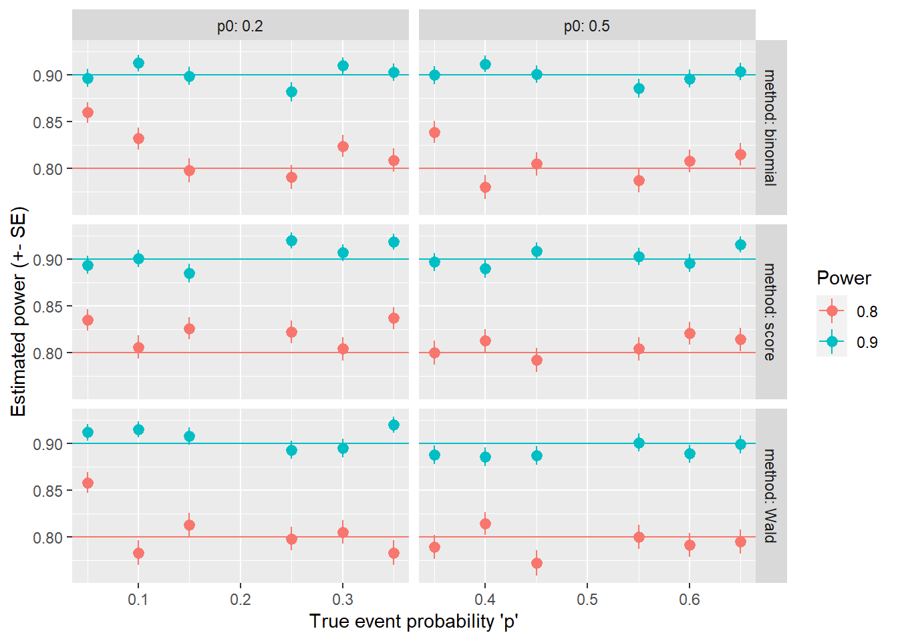
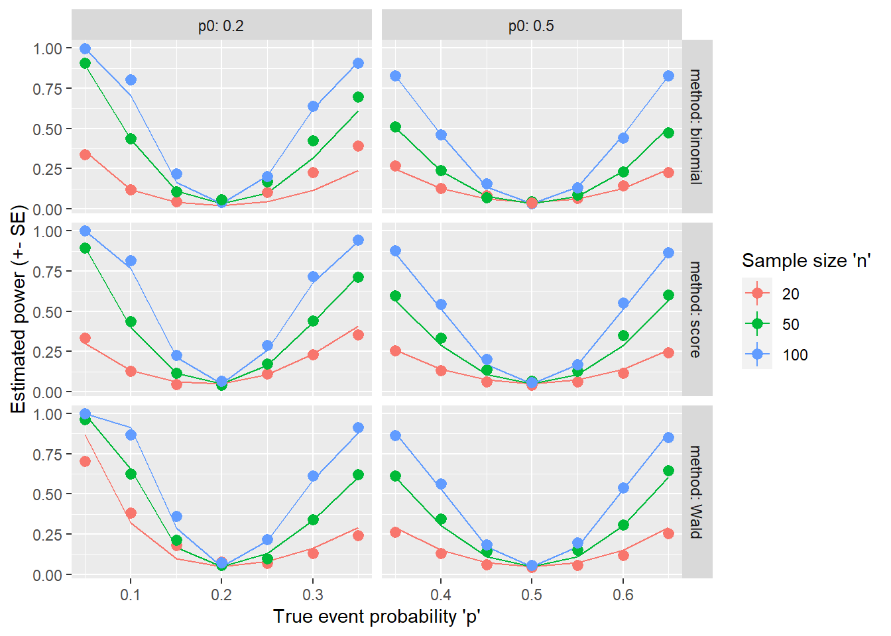

3 One-sample proportion: power-based sample size
3.1 Example
An oncologist is developing a new treatment, and he wants to run a single arm phase II study to estimate the probability of response (partial or complete reduction in the size of the tumor) after four weeks of treatment. The current standard of care has a 30% response probability. How many subjects should he recruit?
3.2 Data generating mechanism
Independent identically distributed variables \(X_1, \ldots, X_n \sim Bernoulli(p)\) with \(p\), the event probability as the parameter of interest.
It will be estimated as the sample proportion \(\hat{p} = \sum_{i=1}^n X_i / n\). Inference can be based on the exact distribution of \(X = \sum_{i=1}^n X_i \sim Binom(n,p)\) or the asymptotic distribution of \(\hat{p} \sim N(p, \frac{p(1-p)}{n})\).
3.3 Power-based sample size
The sample size can also be based on the power to test, at a significance level \(\alpha\), the null hypothesis \(H_0: p = p_0\) versus the two-sided alternative \(H_{a1}: p \neq p_0\), or the one-sided alternatives \(H_{a2}: p > p_0\) or \(H_{a3}: p < p_0\).
Test statistic
There are three commonly used tests:
- Exact binomial test with test statistic \(X = \sum_{i=1}^n X_i \sim Binom(n,p_0)\) under \(H_0\)
- One-sample Wald z-test with test statistic \(Z_W = \frac{\hat{p} - p_0}{\sqrt{\hat{p}(1-\hat{p})/n}} \approx N(0,1)\) under \(H_0\)
- One-sample Score z-test with test statistic \(Z_S = \frac{\hat{p} - p_0}{\sqrt{p_0(1-p_0)/n}} \approx N(0,1)\) under \(H_0\)
Rejection regions for the tests
| Test | \(H_{a1}: p \neq p_0\) | \(H_{a2}: p > p_0\) | \(H_{a3}: p < p_0\) |
|---|---|---|---|
| Exact binomial | \(X \geq b_{\frac{\alpha}{2}; n,p_0}\) or \(X \leq b_{1-\frac{\alpha}{2}; n,p_0}\) | \(X \geq b_{\alpha; n,p_0}\) | \(X \leq b_{1-\alpha; n,p_0}\) |
| Wald z-test | \(|Z_W| \geq z_\frac{\alpha}{2}\) | \(Z_W \geq z_\alpha\) | \(Z_W \leq -z_{\alpha}\) |
| Score z-test | \(|Z_S| \geq z_\frac{\alpha}{2}\) | \(Z_S \geq z_\alpha\) | \(Z_S \leq -z_{\alpha}\) |
where \(b_{\alpha; n,p_0}\) is the upper \(\alpha\)th quantile of the \(Binomial(n,p_0)\) distribution, and \(z_{\alpha}\) is the upper \(\alpha\)th quantile of the \(N(0,1)\) distribution.
The exact binomial test is implemented in R in binom.test, the score test in prop.test (with or without continuity correction). The Wald test is not implemented in base R. The following function implements them in a unified framework to simplify the simulation study, without the option for continuity correction (see, for example, http://www.how2stats.net/2011/09/yates-correction.html for an explanation).
# alternative
# conf.level
# correct=FALSE
# suppresses warnings, changes chi-squared to Z in the Wald test output
one_prop_test <- function(x, n, p0, method = c("binomial", "Wald","score"),
alternative = c("two.sided", "less", "greater"),
conf.level = 0.95){
if (length(x) !=1 | length(n) != 1 | length(p0) != 1)
stop("x, n, and p0 all should be scalars, not vectors")
method <- match.arg(method)
alternative <- match.arg(alternative)
if (method == "binomial"){
res <- binom.test(x=x, n=n, p=p0, alternative=alternative, conf.level=conf.level)
} else
if (method %in% c("Wald", "score")){
suppressWarnings(
res <- prop.test(x=x, n=n, p=p0, alternative=alternative, conf.level=conf.level,
correct = FALSE))
phat <- res$estimate
if (method == "score"){
z.sign <- sign(phat - p0)
Z <- z.sign * sqrt(res$statistic)
names(Z) <- "Z"
res$statistic <- Z
res$parameter <- NULL
res$method <- "1-sample proportions score test"
} else { #Wald
Z <- (phat - p0) *sqrt(n) / sqrt(phat*(1-phat))
names(Z) <- "Z"
# p-value
pval <- switch(alternative,
two.sided = pnorm(abs(Z), lower.tail = FALSE) * 2,
greater = pnorm(Z, lower.tail = FALSE),
less = pnorm(Z, lower.tail = TRUE))
# confidence interval
za <- qnorm(if (alternative == "two.sided")
(1 + conf.level)/2
else conf.level)
ci.half <- za * sqrt(phat*(1-phat)/n)
p.u <- phat + ci.half
p.l <- phat - ci.half
CINT <- switch(alternative,
two.sided = c(max(p.l, 0), min(p.u, 1)),
greater = c(max(p.l, 0), 1),
less = c(0, min(p.u, 1)))
# change recalculated parts
res$statistic <- Z
res$parameter <- NULL
res$p.value <- pval
res$conf.int <- CINT
res$method <- "1-sample proportions Wald test"
}
}
return(res)
}Power formula
The power for a specific alternative \(p=p_1\) are shown for the one-sided alternative hypothesis \(H_{a2}\). The formula for \(H_{a3}\) is a straightforward modification (using \(p_{0-}\) for the Wald test), while the power for the two-sided hypothesis is the sum of the powers for the two one-sided hypotheses using \(\alpha/2\) instead of \(\alpha\).
Power for the tests
| Test | Prob(rejecting \(H_0\) versus \(H_{a2}\)) |
|---|---|
| Exact binomial | \(1 - F_{B(n,p_1)}(b_{\frac{\alpha}{2}; n,p_0})\) |
| Wald z-test | \(1 - \Phi\Big(\frac{p_{0+} - p_1}{\sqrt{p_1(1-p_1)/n}}\Big)\) |
| Score z-test | \(1 - \Phi\Big(\frac{p_{0} + z_\alpha\sqrt{p_0(1-p_0)/n} - p_1}{\sqrt{p_1(1-p_1)/n}}\Big)\) |
where \(F_{B(n,p)}\) is the cdf of the \(Binomial(n,p)\) distribution, \(\Phi\) is the cdf of the \(N(0,1)\) distribution, \(p_{0\pm}= \frac{np_0 + 0.5z_\alpha^2}{n + z_\alpha^2} \pm \frac{n z_\alpha}{n+z_\alpha^2} \sqrt{\frac{p_0(1-p_0)}{n} + \frac{z_\alpha^2}{4n^2}}\) .
#' Calculate power for given sample size, or vice versa. Exactly one of 'n' and 'power' has to be NULL
#' p0 - null hypothesis event probability
#' p1 - alternative hypothesis event probability
#' n - sample size
#' power - power to reject the null hypothesis
#' sig.level - significance level of test
#' alternative - type of alternative hypothesis
#' test - type of test
power_one_prop_test <- function(p, p0, n=NULL, power=NULL, sig.level=0.05,
alternative=c("two.sided","less","greater"),
test = c("binomial","Wald","score")){
if (is.null(power) + is.null(n) != 1){
stop("Exactly one of 'n' and 'power' should be non-NULL")
}
alternative <- match.arg(alternative)
sides <- ifelse(alternative=="two.sided", 2, 1)
test <- match.arg(test)
if (test == "binomial"){
p.body.up <- quote({
ba <- qbinom(sig.level/sides, size = n, prob=p0, lower.tail=FALSE)
pbinom(ba, size=n, prob=p, lower.tail = FALSE)})
p.body.lo <- quote({
ba <- qbinom(sig.level/sides, size = n, prob=p0, lower.tail=TRUE)
pbinom(ba-1, size=n, prob=p, lower.tail = TRUE)})
} else if (test == "score"){
za <- qnorm(sig.level/sides, lower.tail = FALSE)
vratio <- sqrt(p0 * (1-p0) / (p * (1-p)))
delta <- (p - p0) / sqrt(p * (1-p))
p.body.up <- quote({
pnorm(za * vratio + delta * sqrt(n), lower.tail = FALSE)
})
p.body.lo <- quote({
pnorm(-za * vratio + delta * sqrt(n), lower.tail = TRUE)
})
} else if (test == "Wald") {
za <- qnorm(sig.level/sides, lower.tail = FALSE)
za2 <- za^2
v0 <- p0 * (1-p0)
v <- p * (1-p)
p.body.up <- quote({
padj <- (n*p0 + za2/2)/ (n + za2)
w <- n * za * sqrt(v0/n + za2/(4*n^2)) / (n + za2)
pnorm((padj + w - p)/sqrt(v/n), lower.tail = FALSE)
})
p.body.lo <- quote({
padj <- (n*p0 + za2/2)/ (n + za2)
w <- n * za * sqrt(v0/n + za2/(4*n^2)) / (n + za2)
pnorm((padj - w - p)/sqrt(v/n), lower.tail = TRUE)
})
}
p.body <- if (alternative=="two.sided")
call("+", p.body.lo, p.body.up)
else if (alternative=="greater")
p.body.up
else
p.body.lo
if (is.null(power) & !is.null(n)){
power <- eval(p.body)
} else if (!is.null(power) & is.null(n)){
if (test == "binomial"){
n <- 1
found <- FALSE
while (!found & n <= 1e+7){
n <- n+1
pw <- eval(p.body)
found <- (pw >= power)
}
power <- pw
} else {
f <- function(n) {eval(p.body) - power}
if (f(1) > 0){
n <- 1
} else {
n <- uniroot(f, c(1, 1e+07),
tol = .Machine$double.eps^0.25, extendInt = "upX")$root
}
}
}
METHOD <- paste(
switch(test, Wald = "Wald z", score = "Score z", binomial = "Exact binomial"),
"test power calculation")
structure(list(n = n, p0 = p0, p = p, sig.level = sig.level,
power = power, alternative = alternative, note = "n is the number of independent samples",
method = METHOD), class = "power.htest")
}3.4 Getting inputs, worst/best case scenarios
The inputs needed to calculate the sample size are
- a best guess at \(p\), the true value of the proportion to be tested
- the desired power of the study
- the test to be used
The following plot shows how the sample size depends on these inputs. The y-axis is on a log-scale, so that the very large sample sizes don’t dominate the plot.
# set vector of 'p0', 'p' & 'power' values to explore
p0 <- c(0.2, 0.5, 0.8)
d0 <- seq(-0.15,0.15, by=0.01)
pw0 <- c(0.8, 0.95)
m0 <- c("Wald", "score", "binomial")
# Data set with varying 'p' and 'power'
pw_settings <- expand.grid(delta=d0,
p0=p0,
power = pw0,
method = m0,
stringsAsFactors = FALSE)
pw_settings$p <- pw_settings$p0 + pw_settings$delta
# Calculate 'n' for each combination
pw_settings$n <- sapply(1:nrow(pw_settings),
function(idx)
with(pw_settings,
{if(p[idx] == p0[idx]) Inf else
power_one_prop_test(p=p[idx], p0=p0[idx], power=power[idx],
test=method[idx])$n}))
library(ggplot2)
ggplot(pw_settings,
aes(x = delta, y = n, color = factor(p0), linetype = method)) +
facet_wrap(~ power) +
geom_line() +
geom_vline(aes(xintercept = 0)) +
scale_color_discrete("p0") +
scale_linetype_discrete("Method") +
xlab("Change in event probability 'p' - 'p0'") +
ylab("Sample size 'n'") +
ggtitle("Sample size required to achieve target power") +
scale_y_log10() +
theme(legend.position = "top")
The following conclusions can be made based on the plots:
The sample size depends on the direction of the difference:
- For \(p_0=0.5\) the direction does not matter
- For \(p_0<0.5\), fewer samples are needed if \(p < p_0\), while for \(p_0>0.5\) the effect is opposite.
- If the sign of the difference is flipped, then the required sample size is the same if we also change \(p_0\) to \(1-p_0\). For example, detecting a 10% decrease from 20% (to 10%) requires the same sample size as detecting a 10% increase from 80% (to 90%).
Higher power will require larger sample size (as always), but its effect is smaller than that of the \(p-p_0\) difference
The three methods require similar samples size in general, especially the binomial and score tests, with a few notable exceptions:
- The Wald test requires fewer samples compared to the other methods when \(p < p_0 < 0.5\), or symmetrically, \(p > p_0 > 0.5\)
- There is a smaller opposite effect when \(p_0 < p < 0.5\) (or \(p_0 > p > 0.5\)), with the Wald test requiring the most samples, and the score test the least.
Most of these observations can be explained by the fact that the \(p(1-p)\) terms showing up in the power formulas have a maximum at \(p=0.5\).
3.5 Simulation studies
First, we define functions that simulate data according to the data generating mechanism, and then apply the tests to each replicate.
#' Simulate binomial data
#' @param p event probability
#' @param n sample size
#' @param R number of simulations
#' @returns data frame with R rows with the simulation ID, the simulated number of successes,
#' 'x', and the sample size 'n'
sim_one_prop <- function(p, n, R=1){
data.frame(ID = 1:R,
x = rbinom(R, size=n, prob=p),
n=n)
}
#' Analyze simulated binomial data
#' @param simdat output of `sim_one_prop`
#' @param p0 the null hypothesis value for the test
#' @param ... additional arguments passed to `one_prop_test`
#' @returns data frame with estimate, statistic, and p-value from test for each simulation ID
analyze_one_prop <- function(simdat, p0, ...){
# run test on each row
tst_list <- mapply(one_prop_test, x=simdat$x, n=simdat$n,
MoreArgs=list(p0 = p0, ...), SIMPLIFY = FALSE)
names(tst_list) <- simdat$ID
# extract values of interest
res_list <- lapply(tst_list,
function(tst)c(tst$estimate, tst$statistic, tst$p.value))
# combine results into one data set
res <- data.frame(do.call(rbind, res_list))
names(res) <- c("estimate", "statistic", "p.value")
res$ID <- rownames(res)
res
}3.5.1 Achieved power when calculating sample size
The first simulation study explores how the achieved power lines up with the design power using the sample size calculations.
# create simulation settings based on p-p0 difference
sim_settings <-
expand.grid(p0 = c(0.2, 0.5),
method = m0,
power = c(0.8, 0.9),
delta = c(-0.15, -0.1, -0.05, 0.05, 0.1, 0.15),
stringsAsFactors = FALSE)
sim_settings$p <- sim_settings$p0 + sim_settings$delta
#' Function to run simulations for study 1: given power target, calculate sample size and check achieved power
#' @param simset data set with simulation settings - one column per parameter
#' @param R number of replicates per setting
#' @param ... additional arguments to 'power_one_prop_test' not defined in 'simset'
#' @returns data frame with one row per each simulation replicate
run_one_prop_sim1 <- function(simset, R, ...){
sim_list <- list()
# loop through simulation settings
for (idx in 1:nrow(simset)){
simres <- with(simset[idx,], {
# calculate 'n'
pw <- power_one_prop_test(n=NULL, p = p, p0 = p0, test = method,
power=power, ... )
n <- ceiling(pw$n)
# simulate R replicates
simdat <- sim_one_prop(p = p, n = n, R = R)
# analyze the data and return as simres
tmp <- analyze_one_prop(simdat, p0 = p0, method = method, ...)
# add 'n'
cbind(tmp, n=n)
})
# append simulation settings
simres <- cbind(simID = idx, simres, simset[idx,])
# save result
sim_list <- c(sim_list, list(simres))
}
# combine data
res <- do.call(rbind, sim_list)
res
}
# run simulations
set.seed(45636)
R <- 1000
sim1 <- run_one_prop_sim1(sim_settings, R=R)
# extract power at alpha=0.05
sim1_pw <- aggregate(p.value ~ p+delta+p0+method+power,
data=sim1,
FUN = function(x)mean(x <= 0.05))
# rename 'p.value' column to better describe its current contents
names(sim1_pw)[names(sim1_pw) =="p.value"] <- "est.power"
# standard error
sim1_pw <- transform(sim1_pw,
est.power.se = sqrt(est.power*(1-est.power)/R))
# create plot
ggplot(sim1_pw, aes(x=p, y=est.power, color = factor(power))) +
facet_grid(method ~ p0, labeller = label_both, scales="free_x") +
geom_hline(aes(yintercept = power, color = factor(power))) +
geom_pointrange(aes(ymin = est.power-est.power.se, ymax = est.power+est.power.se)) +
scale_x_continuous("True event probability 'p'") +
scale_y_continuous("Estimated power (+- SE)") +
scale_color_discrete("Power")
We can see that in most situations, the simulated power (dots) is close to the target value (horizontal line)-
3.5.2 Achieved power with fixed sample size
The second simulation study explores how the achieved power lines up with the calculated power when using a fixed sample size.
# create simulation settings based on p-p0 difference
sim_settings2 <-
expand.grid(p0 = c(0.2, 0.5),
method = m0,
n = c(20, 50, 100),
delta = c(-0.15, -0.1, -0.05, 0, 0.05, 0.1, 0.15),
stringsAsFactors = FALSE)
sim_settings2$p <- sim_settings2$p0 + sim_settings2$delta
#' Function to run simulations for study 2: given sample size, calculate power and check achieved power
#' @param simset data set with simulation settings - one column per parameter
#' @param R number of replicates per setting
#' @param ... additional arguments to 'power_one_prop_test' not defined in 'simset'
#' @returns data frame with one row per each simulation replicate
run_one_prop_sim2 <- function(simset, R, ...){
sim_list <- list()
# loop through simulation settings
for (idx in 1:nrow(simset)){
simres <- with(simset[idx,], {
# calculate 'power'
pw <- power_one_prop_test(n=n, p = p, p0 = p0, test = method,
power=NULL, ... )
# simulate R replicates
simdat <- sim_one_prop(p = p, n = n, R = R)
# analyze the data and return as simres
tmp <- analyze_one_prop(simdat, p0 = p0, method = method, ...)
# add 'power'
cbind(tmp, power=pw$power)
})
# append simulation settings
simres <- cbind(simID = idx, simres, simset[idx,])
# save result
sim_list <- c(sim_list, list(simres))
}
# combine data
res <- do.call(rbind, sim_list)
res
}
# run simulations
set.seed(45636)
R <- 1000
sim2 <- run_one_prop_sim2(sim_settings2, R=R)
# extract power at alpha=0.05
sim2_pw <- aggregate(p.value ~ p+delta+p0+method+n+power,
data=sim2,
FUN = function(x)mean(x <= 0.05))
# rename 'p.value' column to better describe its current contents
names(sim2_pw)[names(sim2_pw) =="p.value"] <- "est.power"
# standard error
sim2_pw <- transform(sim2_pw,
est.power.se = sqrt(est.power*(1-est.power)/R))
# create plot
ggplot(sim2_pw, aes(x=p, y=est.power, color=factor(n))) +
facet_grid(method ~ p0, labeller = label_both, scales="free_x") +
geom_line(aes(y = power, color=factor(n))) +
geom_pointrange(aes(ymin = est.power-est.power.se, ymax = est.power+est.power.se)) +
scale_x_continuous("True event probability 'p'") +
scale_y_continuous("Estimated power (+- SE)") +
scale_color_discrete("Sample size 'n'")